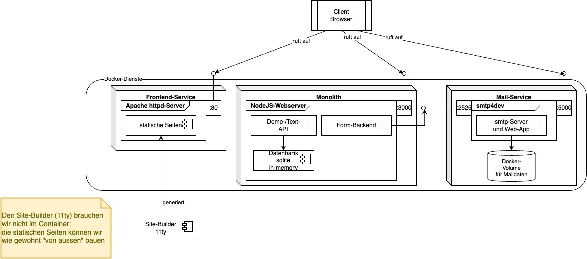
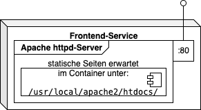

{% extends "../_base_template.html" %}
{% block title %}Lektion 5 - Container für die Entwicklung{% endblock %}

{% block sections %}
<section data-markdown>
<textarea data-template>
# <i class="fas fa-graduation-cap"></i> M347 - Container für Entwicklungsumgebung erstellen

## Heutiges Ziel

* Sie können mittels **Dockerfiles** Container für die Entwicklung der Applikation bauen
* Sie wissen, was **Docker Volumes und Bound Volumes** sind, und wann Sie welche verwenden
* Sie können Container mit den notwendigen Ressourcen (Bound Volumes, Ports) starten
* Sie können **Container als Entwicklungswerkzeug** anwenden
* Sie können verschiedene Container-Dienste miteinander verbinden (Networking)
* Endziel: Sie haben das Frontend (statische Webseiten) als separaten Dienst konfiguriert

</textarea>
</section>

<!-- ----------------------------------------------------------------------------- -->
<section data-markdown>
<textarea data-template>
# <i class="fas fa-graduation-cap"></i> Auf dem Weg zur Microservice-Architektur

Unsere jetzige Architektur sieht folgendermassen aus:

<div class="d-flex gap-10">

<div class="flex-basis-0 flex-grow-1">

Sie wissen, wie Sie den "Monolithen" starten:

```
$ docker run --name monolith \
             -ti -v "${pwd}:/app" -w /app \
             -p 3000:3000 node:20 node server.js
```

Wir haben hier eine so genannte **"Monolithische Architektur:"**

* Die gesamte Applikation wird von einem Programm, einer Code-Basis, zur Verfügung gestellt
* Frontend (Webseite) sowie Backend (Server-Dienste) kommen vom selben Programm


Das ist grundsätzlich nicht falsch, oder auch kein Problem. Allerdings kann dies bei grösseren Projekten limitierend sein:

* das Skalieren (mehr Server-Power) wird schwierig, da Front- und Backend nicht separat skaliert werden können
* Die verschiedenen Dienste verwenden alle dieselbe Programmiersprache, dieselbe Architektur. Das kann limitierend sein bei unterschiedlichen Anforderungen.
* Das gesamte Team wirkt an derselben Code-Basis mit
* Bei Wartungsarbeiten muss die ganze Applikation heruntergefahren werden

</div>
</div>

</textarea>
</section>

<section data-markdown>
<textarea data-template>
# <i class="fas fa-graduation-cap"></i> Auf dem Weg zur Microservice-Architektur

Die Lösung für diese Probleme stellt die **"Microservice-Architektur"** dar: Sie trennt einzelne Komponenten in kleine Dienste auf, welche
**unabhängig voneinander entwickelt und betrieben** werden können.

Wir wollen dies an unserer Beispielapplikation Schritt-für-Schritt umsetzen. 

* **Schritt 1:** Trennen der statischen Webseiten from Monolithen (heute)
* **Schritt 2:** Implementieren eines eigenen Email-Dienstes anstatt ein externer (heute, nächstes Mal)



</textarea>
</section>

<section data-markdown>
<textarea data-template>
# <i class="fas fa-graduation-cap"></i> Auf dem Weg zur Microservice-Architektur


* Die statische Webseite soll von einem eigenen Dienst, von einem eigenen Container ausgeliefert werden: Wir extrahieren den Frontend-Teil vom Monolithen,
  und verwenden dazu einen einfachen, statischen **Webserver-Dienst, [ Apache httpd ](https://hub.docker.com/_/httpd)**

* Die **statischen Webseiten** liefern wir dem Container mittels **Bound Volume**

* Der Client (Browser) kann via weiterhin auf die (immer noch monolithischen) Formular- und API-Dienste zugreifen.

* **Ziel:** Wir haben einen eigenen Container, der nur die statische Webseite ausliefert, und "den Rest", also das Backend, als weiteren Container.

* Der **Client, also der Browser**, kommuniziert direkt mit mehreren Diensten über die geöffneten Netzwerk-Ports der Container.

</textarea>
</section>

<section data-markdown>
<textarea data-template>
# <i class="fas fa-graduation-cap"></i> Frontend mittels Apache httpd

Der Apache httpd-Dienst ist ein einfacher Webserver, der statische Seiten ausliefern kann.<br>
Praktischerweise gibt es diesen bereits als [Docker image auf dem Hub](https://hub.docker.com/_/httpd)

Wir wollen also einen Docker-Container bauen:

<div class="d-flex gap-10">

<div>

Laut Dokumentation erwartet dieser die statischen Files, die er ausliefer soll,<br>
unter **`/usr/local/apache2/htdocs/`**, einem lokalen Linux-Verzeichnis.

Nur:<br>
**Wie kriegen wir nun unsere (lokalen) statischen Dateien dort hinein?**

Hier bieten sich 2 Container-Konzepte an:
</div>
</div>

<div class="d-flex gap-10">
<div class="flex-basis-0 flex-grow-1" style="border:1px solid black">

**Daten in ein neues Image kopieren**

Es wird ein **neues Image** auf Basis httpd mit einem Dockerfile gebaut. Zur Build-Zeit werden die statischen
Dateien **IN das Image kopiert**.<br>
Der daraus erstelle Container beinhaltet dann die statischen Dateien bereits, und httpd kann diese ausliefern.

<https://docs.docker.com/reference/dockerfile/#copy>

</div>
<div class="flex-basis-0 flex-grow-1" style="border:1px solid black">

**Standard-http-Container mit Bound Volume**

Es wird vom Standard-Image von httpd ein Container gestartet. Die lokalen statischen Webseiten-Dateien
werden dem Container mittels **Bound Volume** zur Verfügung gestellt.

<https://docs.docker.com/engine/storage/bind-mounts/>
</div>
</div>

==> Recherchieren Sie (10 min)! Was bedueten diese beiden Konzepte, und welches davon eignet sich
für den aktuellen Anwendungsfall? Welche Vor- und Nachteils sehen Sie in den beiden Verfahren?

==> je ein Schüler / eine Schülerin erklären ein Konzept und Vor- Nachteile!

</textarea>
</section>


<section data-markdown>
<textarea data-template>
# <i class="fas fa-flask"></i> Umbau - Nun sind Sie dran!

Sie sollen nun diesen ersten Teil umsetzen: "Absplittern" des Frontends als Micro-Service. Gehen Sie dazu folgendermassen vor:

## Erstellen Sie einen Container für den Frontend-Dienst

Unser Monolith liefert aktuell mittels NodeJS auch den statischen Teil aus - gestartet wird dieser mit `node server.js`.<br>
Ziel ist, die statische Webseite mittels `httpd`-Container von einem **bound volume** aus auszuliefern.

- **Erstellen Sie einen eigenen Ordner** für Ihr "Frontend"-Projekt. 
- Kopieren Sie Ihr Webseiten-Projekt aus M293 inkl. **statischen Webseiten**-Dateienin den "Frontend"-Ordner
- **Erstellen Sie ein Dockerfile** für ein eigenes "frontend"-Image, basierend auf dem Image  "`httpd`" (https://hub.docker.com/_/httpd/).
- Entfernen Sie alle Files im Frontend-Ordner, die Sie (für diesen Dienst) nicht mehr benötigen
- Erzeugen Sie mit dem Dockerfile nun einen Container, welcher:
  - Ihre statischen Dateien als **Bound Volume** dem Container 'überreicht' (Ordner `site` aus dem 11ty-Build)
  - einen TCP-Port mappt, sodass Sie von aussen mit dem Browser darauf zugreifen können

<i class="far fa-hand-point-right"></i> **Ziel:** Sie haben einen eigenen Container, `frontend`, der auf Ihrem eigenen Dockerfile, abgeleitet von `httpd`, basiert.
Der Container liefert Ihre statische Site via httpd über einen TCP-Port aus. Die lokalen statischen Dateien sind mittels Volume Bind in den Container "hineingereicht".

So können Sie weiterhin an der Webseite arbeiten, und der Container "sieht" diese Änderungen ebenfalls.

<i class="far fa-hand-point-right"></i> Dokumentieren Sie die notwendigen Schritte und Kommandos!<br>
<i class="far fa-hand-point-right"></i> Erstellen Sie nach erfolgeicher Umsetzung einen `git`-Commit, um den Stand Ihrer Arbeit zu sichern!

</textarea>
</section>

<section data-markdown>
<textarea data-template>
# <i class="fas fa-flask"></i> Umbau - Hints

Wir führen hier ein paar neue Konzepte ein:

- ein "**Bound Volume**" bindet ein (Host-)lokales Verzeichnis an ein Container-Verzeichnis:<br>
  Sie können so z.B. das lokale Verzeichnis `/pfad/zu/meiner/webseite` im Container ans Verzeichnis `/site` "binden"<br>
  Siehe <https://docs.docker.com/storage/volumes/>

- ein "**Port Mapping**" "verbindet" einen Host-TCP-Port mit einem Container-TCP-Port, sodass Netzwerk-Verkehr vom Host an den Container geleitet wird.
  Ansonsten wäre unsere Frontend-Webseite von aussen nicht erreichbar.<br>
  Siehe <https://docs.docker.com/engine/reference/commandline/run/#publish-or-expose-port--p---expose> und <https://docs.docker.com/engine/reference/commandline/port/> 

- Um einen Container beim Start in einem bestimmten "Working Directory" zu starten, benutzen Sie im Dockerfile die Anweisung "`WORKDIR`",<br>
  siehe: <https://docs.docker.com/engine/reference/builder/#workdir>. Dieses Konzept benötigen Sie für den httpd-Dienst nicht, nur für den nodejs-Monolithen.


## Warum "Bound Volume"?

Dieser Container dient dazu, unsere Frontend-Webseite zu entwickeln: Wir überreichen ihm den Ordner unserer Enwicklungs-Version der Webseite:
So können wir lokal in unserem gewohnten Code-Editor die Webseite editeren, und sie (vom Container ausgeliefert) testen.

Würden wir die Seiten in das Image hineinkopieren, müssten wir bei jeder (lokalen) Änderung der Seite das Image neu bauen - das wäre unpraktisch!
</textarea>
</section>

<section data-markdown>
<textarea data-template>
# <i class="fas fa-flask"></i> Umbau - Was haben wir erreicht?

**Haben Sie noch Fragen / Probleme beim Extrahieren?** - Wir schauen uns dies gemeinsam an.

Durch diesen Umbau haben wir nun folgendes erreicht:

* Wir haben einen eigenen Container, der sich nur um die Auslieferung des Frontends kümmert.

* Dadurch wird unser Frontend-Service **einfacher, schlanker**: Er macht nur noch "etwas", anstatt alles. Zudem brauchen wir nur noch einen simplen statischen Webserver, anstatt eine NodeJS-Applikation.

* Wir können den Frontend-Dienst nun separat entwickeln, starten, deployen.

<i class="far fa-hand-point-right"></i> Im selben Zug haben wir aber die weiteren Dienste "kaputt gemacht":
Der Formular-Feedback sowie die API-Abfrage funktionieren nun nicht mehr.<br>
**Was müssen Sie tun, damit diese wieder funktionieren?** ==> 
**Wir kümmern uns in den nächsten Lektionen um diese Dienste**.

**<i class="far fa-hand-point-right"></i> Hausaufgabe:**<br>
Stellen Sie das Image und Dockerfile für Ihren eigenen `frontend`-Container fertig! Bringen Sie ihn sowie den Rest des Monolith zum Laufen,
und sorgen Sie dafür, dass die Formular- und API-Abfrage wieder funktioniert!

</textarea>
</section>

<section data-markdown>
<textarea data-template>
# <i class="fas fa-flask"></i> Eigener Maildienst - Volume Mounts

Wir wollen nun einen zweiten Dienst erstellen: Anstelle des externen `ethereal`-Maildienstes wollen wir 
einen lokalen Mailserver verwenden. Dazu verwenden wir [`smtp4dev`](https://github.com/rnwood/smtp4dev), ein Dummy-Mailserver für Entwickler.

<div class="d-flex gap-10">

<div class="flex-basis-0 flex-grow-1">

### Ziel:

* **`smtp4dev` als Docker-Container** bereitstellen

* Konfiguration sowie Maildaten mittels eines **Docker Volumes** persistent machen

* Netzwerkdienste gegen aussen exponieren:
  - Web-Oberfläche: HTTP Port 80
  - Mail-Versand: SMTP Port 25
  - Mail-Abruf: IMAP Port 143
* Mails vom **Feedback-Dienst gehen an den `smtp4dev`-Dienst** (nächstes mal)
</div>
</div>

<i class="far fa-hand-point-right"></i> `smtp4dev` wird praktischerweise ebenfalls als Docker-Image bereitgestellt:

<https://github.com/rnwood/smtp4dev/wiki/Installation#how-to-run-smtp4dev-in-docker>

Wir erfahren dort, welche Ports exponiert werden, **sowie den Speicherort der lokalen Maildaten: `/smtp4dev`**.


</textarea>
</section>

<section data-markdown>
<textarea data-template>
# <i class="fas fa-flask"></i> Eigener Maildienst - Volume Mounts

Um den Docker-Container mit `smpt4dev` zu starten, müssen wir also definieren:

* Auf welche externen Netzwerk-Ports mappen wir die Dienste Web (http, Port 80), SMTP (Port 25) und IMAP (Port 143)?
* **Wie persistieren wir die Mail-Konfiguration und -Daten des Containers, damit diese nicht verloren gehen, wenn
  wir den Container wieder löschen?**

Wir kennen bereits eine Möglichkeit, Daten in einem Container zu speichern / zu persistieren: **Welche?**

<div class="fragment">

**Volume Binds**: Wir binden einen lokalen Ordner an einen Container-Pfad.<br>
--> in diesem Fall jedoch wollen wir (nicht unbedingt) einen lokalen Folder mit den Maildaten: Wir möchten,
dass Docker die Daten zwar persistiert, aber wo, soll uns egal sein.
</div>

<div class="fragment">

Dafür kennt Docker die sogenannten **Docker (managed) Volumes**.

### Docker Volumes

(siehe auch https://docs.docker.com/engine/storage/volumes/)

**Docker Volumes** werden von Docker verwaltet, Sie können diese nicht direkt zugreifen.
Der Vorteil dieser Volumes sind vor allem im Cloud-Bereich zu finden: Docker Volumes können z.B. Cloud-Speicher wie
S3 oder andere Treiber nutzen, anstatt ein lokales Filesystem.

<i class="far fa-hand-point-right"></i> Wir wollen somit die Maildaten, welche unter dem Container-Verzeichnis **`/smtp4dev/`** gespeichert werden,
in einem Docker Volume speichern.
</div>

</textarea>
</section>

<section data-markdown>
<textarea data-template>
# <i class="fas fa-flask"></i> Eigener Maildienst - Volume Mounts

### Aufgabe

* Informieren Sie sich über Docker (managed) Volumes: Wie erstellen Sie eines? Wie binden Sie dieses an einen Container?
* Erstellen Sie ein **Docker Volume**, welches die Maildaten speichern soll
* Erstellen Sie einen Docker-Container vom Image [rnwood/smtp4dev](https://hub.docker.com/r/rnwood/smtp4dev), mit folgenden
  Ressourcen:
  * Web-Port-Mapping (intern: Port 80) auf Port 8888
  * SMTP (Mailversand)-Port-Mapping (intern: Port 25) auf Port 2525
  * IMAP (Mailbox-Abruf)-Port-Mapping (intern: Port 143) auf Port 4343
  * Container-Verzeichnis `/smtp4dev/` als **Docker Volume** binden
* **Zusatzaufgabe:** Wie erstellen Sie vom Managed Docker Volume ein Backup der darauf befindlichen Daten? Finden Sie eine Lösung / ein Docker-Kommando, um dies zu erstellen!

  

  * **Notieren sie sich die dazu notwendigen Kommandos!**
  * **Versuchen Sie, Ihren Mail-Client (z.B. Outlook), mit Ihrem Mailserver zu verbinden!**
  * Nächstes Mal bauen wir dann den Feedback-Dienst so um, dass er unseren neuen, lokalen Maildienst benutzt!


</textarea>
</section>

{% endblock %}
